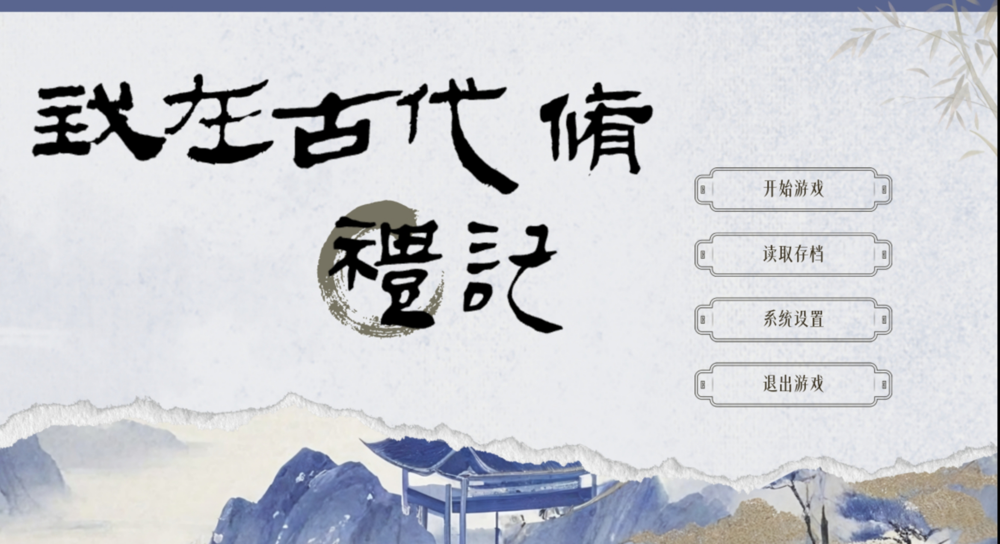
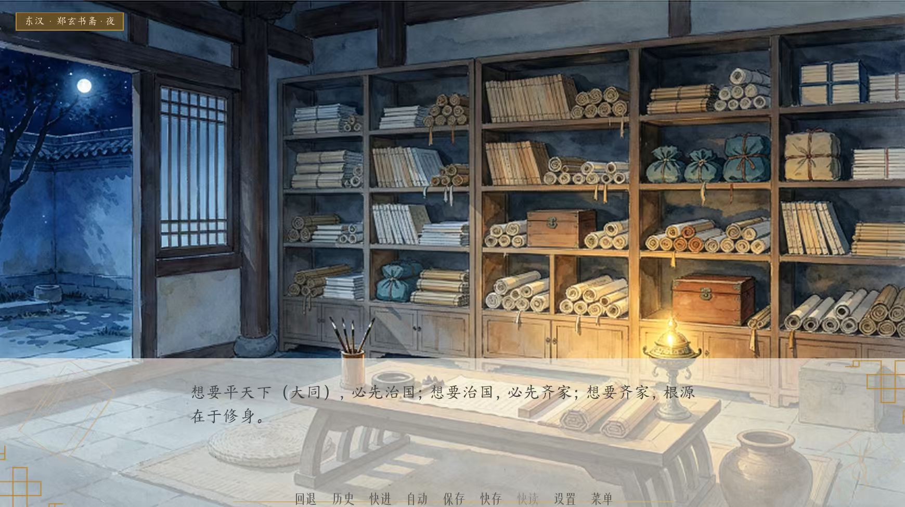
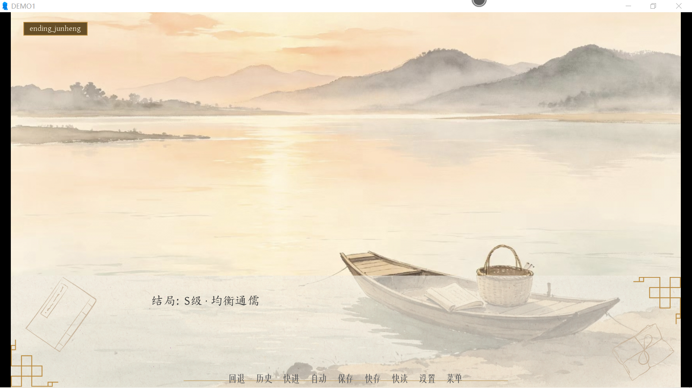

五维礼心测试
《我在古代修礼记》互动测试 · 测出你在礼学传承中最偏向哪一维
从 40 道题库中随机抽取 10 道 · 约 2 分钟 · 凭第一直觉作答
典章
庙堂之高，礼法之严，秩序之重。礼首先得“对”。
日用
起居之微，人情之常，烟火之实。礼得“能过”。
敬诚
虔心之笃，信守之坚，本真之纯。礼得“真”。
仁和
恻隐之温，万物之谐，共生之善。礼得“暖”。
传文
薪火之继，弦歌之续，不朽之承。礼得“留”。
礼心十问
以下 10 道题从题库中随机抽取。
没有标准答案，选你第一反应最接近的那个。
《我在古代修礼记》
一款以《礼记》千年生命史为线索的互动叙事游戏
故事简介
你是一名被《礼记》作业折磨到伏案小憩的现代学生。再次睁眼，后脑勺被硬物硌得生疼——你躺在两千多年前鲁国的土路上，脚边是一卷断裂的竹简。
从孔子杏坛讲学，到秦火焚书、二戴辑录，再到郑玄作注、礼入民间，你要亲历这部典籍的完整生命历程。每一次抉择，都会镌刻在简册之上，也会改变你五维礼心的形状。
五卷主线
- 第一卷 · 平天下｜大道之行。杏坛听讲，与子贡论大同。
- 第二卷 · 治国｜为政以礼。随二戴走访乡野，辑录残简，定《礼记》之名。
- 第三卷 · 齐家｜门内之义。观民间婚俗，辨《内则》繁简。
- 第四卷 · 修身｜慎己诚敬。随郑玄作注，看经、俗、约如何一根三枝。
- 第五卷 · 礼传千年｜修身向外，生生不息。礼从书斋走入市井、渡口、布庄。
五维数值系统
游戏中的每一个选择，都会影响【典章】【日用】【敬诚】【仁和】【传文】五个维度。没有绝对的对错，只有你更偏向哪一种“礼心”。结局会根据你的五维形状而不同：庙堂儒宗、乡俗礼师、至诚君子、拘礼腐儒……全看你了。
游戏截图

《我在古代修礼记》主界面 开启你的修书之旅。

古之欲明明德于天下者，先治其国；欲治其国者，先齐其家；欲齐其家者，先修其身。——《礼记·大学》

S级结局 · 均衡通儒
礼不独在庙堂，亦不独在乡野。在两端之间，找到了人间的平衡。
《礼记》小科普
读测试之前，先认识一下这部书
《礼记》是什么？
儒家经典“十三经”之一，主要记录先秦至汉初儒家关于礼的论述、仪节与思想。我们今天通行的版本是戴圣选编的《小戴礼记》，共四十九篇。
大戴与小戴
西汉戴德（大戴）辑录《大戴礼记》八十五篇，其侄戴圣（小戴）辑录《小戴礼记》四十九篇。后者流传更广，就是今天说的《礼记》。
郑玄作注
东汉郑玄为《礼记》作注，兼采今古文，积十四年之功。郑注之后，《礼记》得以独立成经，与《周礼》《仪礼》并称“三礼”。
投壶：从射礼到游戏
投壶源于周代射礼。射礼需广庭弓矢，宴饮间难以行射，遂以壶代侯、以矢代箭。后流入民间，成为年节闲时的娱乐，但“心平手稳、让长不争”的道理还在。
乡饮酒礼
古代乡里定期举行的宴饮之礼，核心是“明长幼、和乡里”。仪式虽繁，其义在今天仍可转化：邻里互助、敬老睦邻。
“毋不敬”
《礼记·曲礼》开篇即言：“毋不敬，俨若思，安定辞。”三个字，道尽礼的内核——不是繁文缛节，而是时时存一份敬。游戏里你做的每个选择，其实都在回答这三个字。